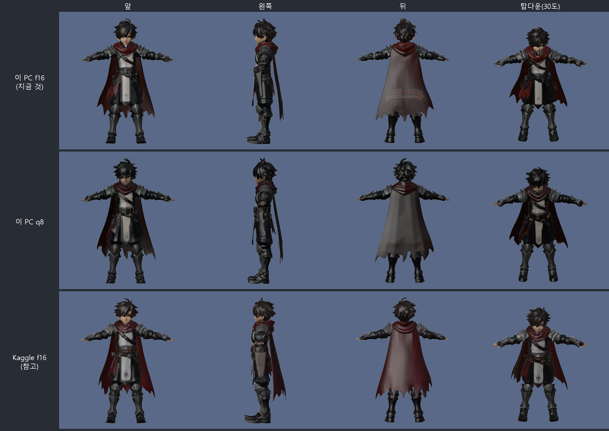
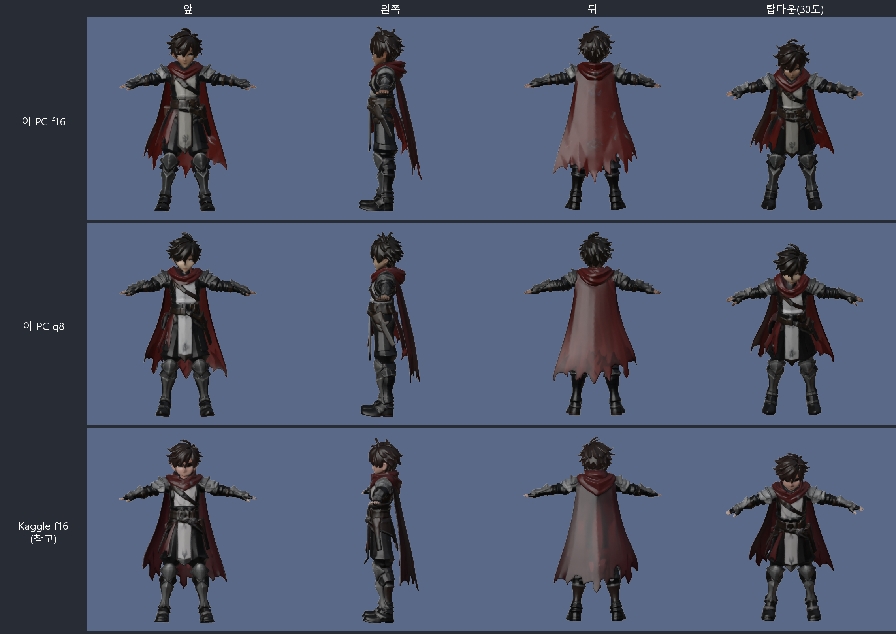
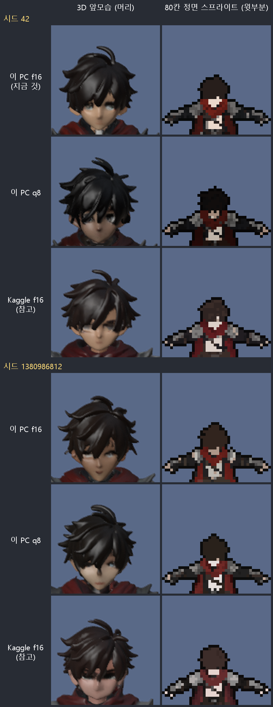
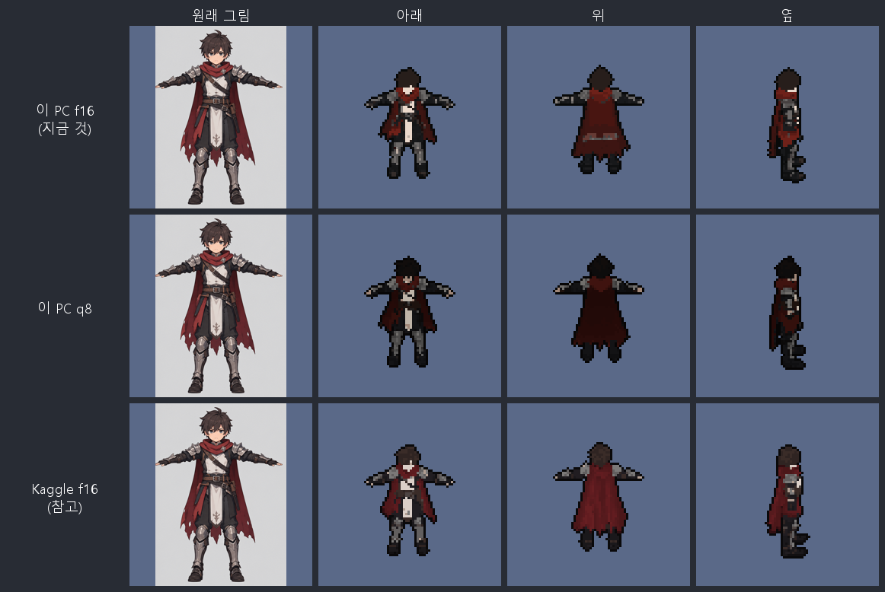
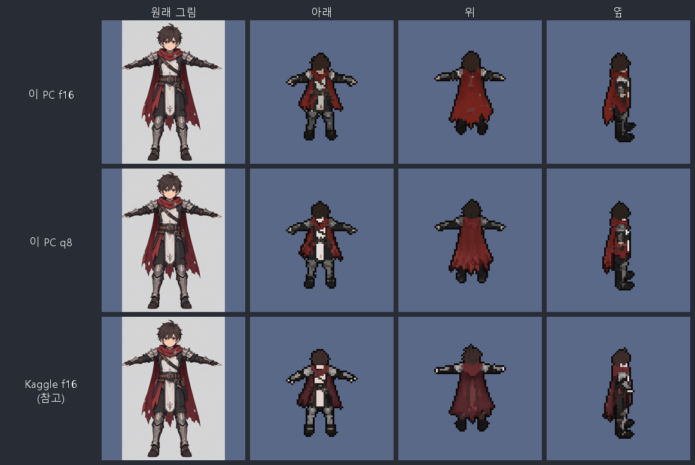

pixel-pipeline · 1단계 · 그림 → 3D 모델
TRELLIS.2 를 C++ 로 옮긴 trellis.cpp v0.8.1 (MIT) 을 어디서(이 PC·Kaggle), 어떤 가중치(f16·q8)로 돌릴지 고르려고 같은 그림·같은 시드로 비교한 기록이다.
Kaggle f16추천
4분 32초
기다림·주고받기까지 포함. 밝고 얼굴이 잘 보여 품질이 가장 좋다.
이 PC q8
6~7분
f16 보다 2.0~2.1배 빠르다. 모양은 같고 색이 어둡다.
이 PC f16
13~14분
시험 때 trellis.py 기본. Kaggle 보다 어둡게 나온다.
모양 차이 f16 ↔ q8
92~94%
윤곽 겹침. 같은 f16 을 Kaggle 에서 돌릴 때(80~93%)보다 덜 달라진다.
결론. 품질은 Kaggle f16 이 가장 낫고 속도도 가장 빠르다. 이 PC 에서 빨리 돌리려면 q8 이 f16 의 절반 시간이지만 색이 어둡다. 품질은 가중치보다 시드에 따라 더 크게 달라지므로, 시드 몇 개를 돌려 미리보기로 고르는 게 낫다.
일러스트 → 3D 모델 → Mixamo 동작 → Blender 렌더 → 80칸 픽셀 스프라이트로 가는 파이프라인
(작업 폴더의 pixel-pipeline/, 이 저장소 밖)의 1단계다. 정면 일러스트 한 장으로 3D 모델(GLB)을 만든다.
| 그림 | warrior 정면 일러스트 564×785, 배경 있음 (아래 픽셀 비교 그림의 "원래 그림") |
|---|---|
| 프로그램 | trellis.cpp v0.8.1. 해상도 512, 텍스처 1024, PNG 텍스처(--webp off).
면 수 옵션(--faces)이 아직 없어 약 15만 면으로 줄어든다 |
| 가중치 | Hugging Face ilintar/trellis2-gguf. f16 은 512용 8개 11.3GB,
q8 은 q8/ 폴더의 8개 6.8GB (birefnet·ss_dec 는 f16 과 같은 파일) |
| 시드 | 42, 1380986812. trellis.cpp 는 시드 0 을 "매번 무작위"로 받는다 |
| 이 PC | GTX 1660 SUPER 6GB, 텐서 코어 없음. Windows CUDA 13 판 |
| Kaggle | T4 (텐서 코어 있음), Linux CUDA 13 판. 같은 v0.8.1, 같은 f16 가중치 |
시드 42
시드 1380986812
trellis.cpp 가 돈 시간이다. Kaggle 은 여기에 기다림·주고받기가 더해져, 시드 42 는 모두 272초(4분 32초)였다.
| 시드 | 이 PC f16 | 이 PC q8 | Kaggle f16 |
|---|---|---|---|
| 42 | 854초 (14분 14초) | 426초 (7분 6초) | 105초 · 모두 272초 |
| 1380986812 | 775초 (12분 55초) | 369초 (6분 9초) | 154초 |
| 단계 | 이 PC f16 | 이 PC q8 | Kaggle f16 |
|---|---|---|---|
| 구조 흐름 sparse structure | 507.0 / 469.5 | 250.4 / 212.0 | 33.7 |
| 모양 흐름 shape SLAT | 153.8 / 138.2 | 56.6 / 54.2 | 9.8 |
| 텍스처 흐름 texture SLAT | 100.1 / 83.5 | 35.8 / 32.7 | 6.0 |
| 그래픽 메모리 최대 | 2.8GB | 1.8GB | 2.9GB |
이 PC 칸은 시드 42 / 시드 1380986812, Kaggle 칸은 시드 1380986812 다.
trellis.py, 1380986812 는 --verbose 로 직접 실행).
같은 설정도 잴 때마다 10~20% 달라진다 (구조 흐름 f16 469~507초, q8 212~250초). 2배 차이는 그보다 훨씬 크다.비교 렌더는 스프라이트와 같은 카메라(80칸, 30도 내려다봄)로 아래(정면)·위(뒷모습)·옆에서 찍었다. "윤곽 겹침"은 두 렌더에서 캐릭터가 차지한 자리가 얼마나 같은지(IoU, 1 이면 완전히 같음)다.
| 비교 | 시드 | 아래 | 위 | 옆 | 80칸에서 한쪽만 칠한 칸 |
|---|---|---|---|---|---|
| 이 PC f16 ↔ 이 PC q8 | 42 | 0.941 | 0.942 | 0.919 | 23 / 29 / 28 |
| 1380986812 | 0.931 | 0.927 | 0.927 | 29 / 48 / 19 | |
| 이 PC f16 ↔ Kaggle f16 | 42 | 0.927 | 0.847 | 0.807 | 32 / 113 / 71 |
| 1380986812 | 0.871 | 0.797 | 0.810 | 67 / 162 / 73 |

trellis.py 기본(이 PC f16)이다.
아래(정면) 렌더의 밝기다 (0~255, 사람 눈 기준 밝기). 머리는 캐릭터 키의 위쪽 15% 다.
| 돌린 곳 | 시드 42 머리 / 몸 전체 | 시드 1380986812 머리 / 몸 전체 |
|---|---|---|
| 이 PC f16 | 32 / 58 | 39 / 64 |
| 이 PC q8 | 13 / 41 | 34 / 66 |
| Kaggle f16 | 44 / 65 | 48 / 71 |



| 돌릴 곳 | 512 한 장 | 품질 | 쓰기 좋은 때 |
|---|---|---|---|
| Kaggle f16 | 1분 45초~2분 34초 기다림·주고받기 포함 4분 32초 (한 번 잼) | 가장 낫다. 밝고 얼굴이 보인다 | 기본으로 쓰기 |
| 이 PC f16 | 13~14분 | Kaggle 보다 어둡다 | 인터넷 없이 돌릴 때 |
| 이 PC q8 | 6~7분 | 모양은 f16 과 거의 같고 색은 더 어둡다 | 시드 여러 개를 빨리 훑어볼 때 |
pixel-pipeline/trellis.py 의 기본은 아직 이 PC f16 이다. Kaggle 을 기본으로 할지, q8 을 고를 수 있게 할지 정한다.CMAKE_CUDA_ARCHITECTURES=61-virtual;80-virtual 과
GGML_CUDA_FORCE_MMQ 로 직접 빌드하라고 권한다. 배포판 CUDA 12 판은 60;61;70 으로 빌드되어
이 카드에서는 sm_70 코드가 돌 것이라 시험하지 않았다.pixel-pipeline/ 폴더에서 돌린다.
# 이 PC f16 (trellis.py 기본)
.venv\Scripts\python.exe trellis.py 정면그림.png --out work\test\warrior.glb --seed 42
# Kaggle f16
.venv\Scripts\python.exe trellis.py 정면그림.png --out work\test\warrior.glb --seed 42 --backend kaggle
# q8 가중치 받기 (tools\trellis_cpp\models\q8\ 에 들어간다)
.venv\Scripts\hf.exe download ilintar/trellis2-gguf q8/birefnet.gguf q8/dinov3.gguf q8/ss_flow.gguf q8/ss_dec.gguf q8/shape_flow_512.gguf q8/shape_dec.gguf q8/tex_flow_512.gguf q8/tex_dec.gguf --local-dir tools\trellis_cpp\models
# 이 PC q8 (trellis.py 에 옵션이 아직 없어 직접 돌린다)
tools\trellis_cpp\bin\trellis-cli.exe 정면그림.png out.glb --models tools\trellis_cpp\models\q8 --res 512 --seed 42 --atlas 1024 --webp off --dump-bg --require-gpu